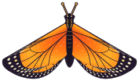

Open Flight · A field notebook of paper flight
One Sheet
Ten flying things, each from one sheet of paper. How to make them, how they fly and where their ideas come from. Free to read and print.
Pick up to three designs. One PDF. For anyone curious about flight, from five years old to ninety-five. No account needed.

Contents
-
01
One sheet
Why paper flight, and how to read this book together.
-
02
How flight works
Lift, weight, balance and drag, shown with paper.
-
03
Nature’s flyers
Seeds, insects, pterosaurs, birds and bats: how flight evolved, and what paper can copy.
-
04
Airplanes
One sheet each. Four folds, each named after a real aircraft.
-
05
Butterflies
Three paper gliders. Cut, fold, clip and trim, then tell us how they flew.
-
06
Flying objects
A ring, a maple seed and a two-winged glider from 1918.
-
07
A short history of flight
From kites and balloons to gliders, the first airplane and the paper plane contests.
-
08
Beyond the sky
Why wings need air, how the Space Shuttle glided home, and what it takes to fly on Mars.
-
09
Contests and records
How people measure a paper flight, and how to hold a contest at home.
-
10
The flight lab
Predict, launch, change one thing, compare.
- A
Appendix


1 · One sheet
One sheet
Every flyer in this book starts as one sheet of paper. Fold it, launch it, then change one thing and launch it again. That is the whole method, and it works at the kitchen table and in a classroom.
We say what we know and what we don’t. Numbers marked “estimate” come from the geometry. Tell us how yours fly.
- Ages 5–7 · make it together
- Choose a design and its colors. Two pairs of hands make the tricky folds and cuts easier. Point to where you think it will land.
- Ages 8–12 · run a flight test
- Mark where five flights land. Change one fold and fly five more from the same spot. What changed?
- Any age · go deeper
- Open “Go deeper” on each plate: the real physics, the numbers and where they come from. Then ask what the next flight could tell you, and let the builder choose the next change.
For teachers
Plan copies for your class, print a fair-test sheet and run a contest together.
Plan a class →The book
We are preparing One Sheet as a printed book: about 160 sewn pages, at a size that also prints at home on A4 and US Letter. The chapters on this site are its free web edition.
About the book →